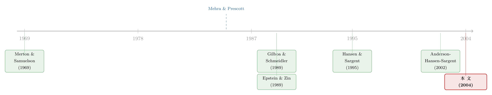

当投资者不再相信自己的模型：稳健性如何撑起股权溢价
本文读的是 Maenhout (2004, Review of Financial Studies)：当投资者不仅怕「风险」、还怕「自己手里这个模型本身是错的」，他会去防备一个内生的最坏情形。这一份「稳健性 (robustness)」让股票需求直接腰斩、让有效风险厌恶随环境变化，并在均衡里同时抬高股权溢价、压低无风险利率——用合理的参数就能撑出 4%–6% 的股权溢价。
1 一个被默认掉的假设
先讲一个几乎所有人都见过、却很少有人停下来质疑的结论。
Merton (1969) 和 Samuelson (1969) 告诉我们：一个幂效用 (power utility) 的投资者，面对独立同分布的股票收益、没有摩擦、没有劳动收入，他投在股票上的最优财富比例 是一个常数——既不随年龄变，也不随财富变。年轻人和老年人应该持有一样的股票仓位。
这个结论漂亮，却和现实里理财顾问的建议正好相反（「临近退休就少买点股票」）。于是一大批文献忙着去松动 Merton-Samuelson 的各种假设，想从理论上把那条「随年龄减仓」的建议救回来。
但 Maenhout 盯上的，是一个更底层、几乎从没被人动过的假设：在这整套动态组合选择里，投资者对收益过程本身是完全笃定的。 他先估出一组参数，然后就当它们是已知的、固定的、真的。
问题在于：一阶矩——也就是期望收益——是出了名地难估。Merton (1980)、Cochrane (1998)、Blanchard (1993) 都强调过这一点。Welch (2000) 干脆去做了一次问卷，结果发现金融经济学家们报上来的股权溢价估计离散得惊人。连专家都莫衷一是，凭什么假设投资者心里揣着一个精确无误的 m？
接着，一个自然的问题是：如果投资者自己也知道「我估的这个模型多半不太对」，他会怎么做组合？这正是这篇论文的起点。
2 怕风险，和怕「模型错了」，是两回事
这里要把两种「怕」分清楚，这是全文的枢纽。
标准框架里，投资者怕的是风险 (risk)：模型是对的，但未来有随机性。他用风险厌恶系数 \(\gamma\) 给这种随机性定价。
Maenhout 引入的是第二种怕：模型不确定性 (model uncertainty)，又叫 奈特不确定性 (Knightian uncertainty) 或 模糊 (ambiguity)。投资者手里有一个「参照模型 (reference model)」，他觉得它有用，但怀疑它被设定错了。于是他不愿意只用这一个模型去算延续价值，而是想防着一族「跟参照模型差不多、但没那么友善」的替代模型。
这就引出了 最大-最小期望效用 (max-min expected utility)：投资者像 Gilboa and Schmeidler (1989) 笔下那样，心里装着一族先验 (priors)，而且是个「悲观主义者」——他按最坏情形的那个先验来算期望效用。
关键的约束在于：不是「任何错都可以防」。替代模型和参照模型之间的距离，被 相对熵 (relative entropy) 锁住——直觉上熵就是一个对数似然比，熵小的替代模型「在统计上很难和参照模型区分开」，所以才值得防备；离谱的模型熵太大，不予考虑。一个偏好参数 \(\hat\theta\) 量化了「投资者有多想要稳健」：\(\hat\theta=0\) 就退回到普通的期望效用最大化。
这套连续时间的做法，来自 Anderson, Hansen, and Sargent (2002，下称 AHS)，而经济学里把稳健性这套语言引进来的，是 Hansen and Sargent (1995)。Maenhout 的工作，是把它搬进组合选择，并且——这才是真正关键的一步——做了一个让整件事「能算出闭式解」的改造。
3 模型：把「最坏情形」显式地解出来
下面进入模型。我会一步步走，因为这篇论文的魅力，恰恰在于每一步都干净得能用手推。
3.1 标准问题
投资者在无风险资产（瞬时收益 r）和股票之间配置。股价是几何布朗运动：
$$dS_t = m S_t\,dt + \sigma S_t\,dB_t$$
记 \(\alpha_t\) 为投在股票上的财富比例，财富的状态方程是
$$dW_t = \left[W_t\big(r+\alpha_t(m-r)\big) - C_t\right]dt + \alpha_t \sigma W_t\,dB_t$$
他要最大化
$$E\left[\int_0^T \exp(-\delta t)\,\frac{C_t^{1-\gamma}}{1-\gamma}\,dt\right]$$
按 Merton (1971)，记价值函数为 \(V(W,t)\)，最优性的 HJB 方程是
$$0 = \sup_{\alpha,C}\left[\frac{C_t^{1-\gamma}}{1-\gamma} - \delta V(W,t) + \mathcal{D}(\alpha;C)V(W,t)\right]$$
其中那个微分算子（也就是把伊藤引理作用在 \(V\) 上、再除以 \(dt\) 取期望）为
$$\mathcal{D}(\alpha;C)V = V_W\left[W(r+\alpha(m-r))-C\right] + V_t + \tfrac12 V_{WW}\,\alpha^2\sigma^2 W^2$$
AHS 的洞见是：\(\mathcal{D}V\) 这个算子，本质上算的是 \(\tfrac1{dt}E(dV)\)，而这个期望算子背后藏着一个特定的参照模型。投资者怀疑的，正是它。
3.2 把怀疑写成一个漂移扰动
AHS 证明，在纯扩散设定下，「替代模型」无非是给状态变量的运动加一个内生漂移 \(u(W_t)\)：
$$dW_t = m(W_t)\,dt + \sigma(W_t)\left[\sigma(W_t)u(W_t)\,dt + dB_t\right]$$
为什么只能动漂移、不能动扩散？因为熵要求替代测度对参照测度 绝对连续 (absolutely continuous)，由 Girsanov 定理，这就把「一般的模型不确定性」收窄成了「关于漂移函数的不确定性」。而这恰好就是我们想要的——开篇说的，投资者真正心虚的就是那个期望收益 m（也就是漂移）。
于是「找最坏情形」就是一个内生的极小化：在期望延续价值上加一个熵罚项，
$$\inf_u\; \mathcal{D}V + u(W_t)\sigma(W_t)^2 V_W + \frac{1}{2\hat\theta}\,u(W_t)^2\sigma(W_t)^2$$
前两项是「按扭曲后的模型算出来的延续价值」，第三项是偏离参照模型要付的熵罚，权重 \(1/\hat\theta\)。\(\hat\theta\) 越大，投资者越不信参照模型，越敢考虑大的漂移扭曲。
把这套机制塞进 Merton 问题，并把固定的 \(\hat\theta\) 换成一个状态依赖的版本 \(\Theta(W,t)>0\)（这个替换是后面所有闭式解的关键），HJB 变成一个 sup-inf：
$$0 = \sup_{\alpha,C}\inf_u\left[\frac{C_t^{1-\gamma}}{1-\gamma} - \delta V + \mathcal{D}(\alpha;C)V + V_W\,\alpha^2\sigma^2 W^2 u + \frac{1}{2\Theta(W,t)}\alpha^2\sigma^2 W^2 u^2\right]$$
先解里面那个 inf，对 \(u\) 求一阶条件，得到一个出奇简洁的最坏情形漂移：
$$u^* = -\Theta\,V_W$$
直觉很美：因为 \(V_W>0\)（财富的边际价值为正），最坏情形就是给财富方程加一个负漂移——也就是「假想未来收益会比参照模型更差」。这正是悲观主义者会去防的那个世界。
3.3 稳健性如何改写了组合规则
把 \(u^*\) 代回去，HJB 收拢成
$$0 = \sup_{\alpha,C}\left[\frac{C_t^{1-\gamma}}{1-\gamma} - \delta V + \mathcal{D}(\alpha;C)V - \frac{\Theta}{2}V_W^2\,\alpha^2\sigma^2 W^2\right]$$
消费的一阶条件 \((C^*)^{-\gamma}=V_W\) 完全不受稳健性影响——这很关键，等会儿再说它的含义。但组合的一阶条件被改写了：
对比一下：令 \(\Theta=0\)，就退回 Merton 的经典结果——最优仓位是近视需求 \(\frac{m-r}{\sigma^2}\) 再除以风险厌恶调整 \(-\frac{V_{WW}W}{V_W}\)。稳健性额外塞进来一项 \(\Theta V_W^2 W>0\)，把分母的绝对值撑大，于是股票仓位被压低。投资者就像变得更厌恶风险了一样。
3.4 那个让一切闭合的「同质化」技巧
但这里有个麻烦。如果像 AHS 那样让 \(\hat\theta\) 固定，幂效用下的稳健偏好不是同质的 (homothetic)——稳健性会随财富上升而「磨损」掉，富人几乎感觉不到它。Maenhout 的第一个贡献，就是用一个 同质稳健性 (homothetic robustness) 的改造解决它：把熵罚参数按价值函数来缩放，
$$\Theta(W,t) = \frac{\hat\theta}{(1-\gamma)\,V(W,t)} > 0$$
这一步的动机，来自 Hansen et al. (2002) 在「乘子形式」与「约束形式」之间建立的对应：约束形式里熵约束的拉格朗日乘子会内生地随财富重标，而当 \(V(W)=kW^{1-\gamma}\) 时，按 \(kW^{1-\gamma}\)（或等价地按 \(V\)）去缩放，恰好让问题对财富的尺度不变。于是稳健性不再随财富磨损，所有结果都能写成闭式解。（这种「把动态组合的天书化简到能手解」的追求，和《把投资组合的「天书」解到只剩一个常微分方程》是同一种精神。）
4 反转：稳健性 = 提高风险厌恶？是，但不全是
现在到了全文最漂亮的那个反转。
同质化之后，Maenhout 证明了一个 观测等价 (observational equivalence) 结果：带稳健性的幂效用投资者，在组合选择上，和一个 随机微分效用 (stochastic differential utility, SDU) / Duffie-Epstein (1992b) 投资者无法区分。 稳健性可以被重新解释成「在不改变跨期替代意愿的前提下，提高了风险厌恶」——有效风险厌恶大致就是 \(\gamma+\hat\theta\)。
还记得 3.3 里那个「消费一阶条件不受稳健性影响」吗？这就是 SDU 解释的根：稳健性只动了风险态度那一维，没动跨期替代那一维，正好对应 Epstein and Zin (1989) 把这两者拆开的递归效用。
但 Maenhout 紧接着指出一个 SDU 给不了的东西：稳健投资者的有效风险厌恶是 环境特定 (environment-specific) 的。同一个人，在金融市场里表现得像高风险厌恶，在 Ellsberg 罐子那样的实验里却像低风险厌恶。换句话说，靠资产价格估出来的「风险厌恶」，会系统性地高于靠思想实验/内省估出来的「纯」风险厌恶——二者之差，正是稳健性。这是模型一个可证伪的预言。
这就把谜题从一个尴尬变成了一个故事：我们不必再假设投资者有高到离谱的风险厌恶。组合上的「过度保守」，一部分根本不是风险厌恶，而是对模型算不准的恐惧。
（如果你想看「投资者随着行情在乐观与悲观之间换尺子」的动态版本，那是这条线后来的延伸，可参见《悲观与乐观的浪潮：当「稳健」的投资者学会了随行情换尺子》；而「算不准均值就干脆退出股市」的极端情形，可参见《算不准均值的那群人，悄悄退出了股市》。)
5 落到均衡：4%–6% 的股权溢价
最后一步，把这个投资者放进一个 Lucas (1978) 式的交换经济均衡里。结论是干净的对称：稳健性同时抬高均衡股权溢价、压低无风险利率——这正好是 Mehra and Prescott (1985) 的 股权溢价之谜 (equity premium puzzle) 与 Weil (1989) 的无风险利率之谜要的方向。
机制上，Maenhout 指出 Breeden (1979) 的 消费 CCAPM 恰好作为「最坏情形下的股权溢价」浮现出来，它只由风险厌恶驱动；而稳健性在这个最坏情形和真实风险溢价之间打入一个 楔子 (wedge)。经验上，这个 3% 到 5% 的楔子，在通常长度的时间序列里很难被检测出来——这本身就是论文的一个微妙之处：稳健投资者防备的那个世界，统计上和真实世界几乎区分不开。给定合理的风险厌恶与不确定性厌恶，一个 4% 到 6% 的均衡股权溢价就能被撑起来；而合理参数下，最优股票需求会被压低约 50%。
6 文献脉络
把这条线捋一捋，会看到两条河在 2004 年汇流。
一条是动态组合选择：Merton (1969)、Samuelson (1969) 立下「常数仓位」的基准，Merton (1971) 给出连续时间的 HJB 工具。但这一支长期默认「收益过程已知」。
另一条是资产定价的谜题与偏好革新：Mehra and Prescott (1985) 抛出股权溢价之谜，Weil (1989) 补上无风险利率之谜；Epstein and Zin (1989) 与 Duffie and Epstein (1992b) 用递归效用把风险厌恶和跨期替代拆开，给了化解谜题的一种语言。
与此并行，对「不确定性」本身的形式化在推进：Gilboa and Schmeidler (1989) 的多先验最大-最小效用、Epstein and Wang (1994) 在资产定价里的奈特不确定性、Chen and Epstein (2002) 的连续时间多先验，是「模糊」这一支；而 Hansen and Sargent (1995)、Anderson, Hansen, and Sargent (2002) 从控制论引来的「稳健控制」，是「稳健性」这一支。Hansen, Sargent, and Tallarini (1999) 已在二次型、永久收入框架里得到「稳健 ≈ 更有耐心」的观测等价。

Maenhout (2004) 站在两条河的交点上：他把 AHS 的连续时间稳健性搬进 Merton 的组合问题，用同质化改造换来闭式解，把稳健性和递归效用焊在一起，再一路推到 Lucas 均衡里的股权溢价。
7 评论与延伸（Q&A + 研究方向）
(a) 几个可能的疑问
Q：稳健性 (robustness) 和模糊厌恶 (ambiguity aversion)、参数不确定性 (parameter uncertainty) 到底是不是一回事？
不完全是。参数不确定性（如 Barberis (2000)、Xia (2001) 的贝叶斯/学习路线）通常局限在参数化的不确定上，投资者会更新先验、随时间学习。稳健性更激进：即使在收紧的扩散结构里，它怀疑的是整个漂移函数，而且投资者不学习、只防最坏情形。它在形式上最接近 Gilboa-Schmeidler 的多先验最大-最小效用——\(\Theta\)（或 \(u\)）可以理解为给那一族先验编了号。
Q：「稳健 ≈ 提高风险厌恶」，那这模型不就什么新东西都没加吗？
在组合选择这一个切面上确实观测等价于 SDU。但 Maenhout 强调两点新意：其一，它给「为什么资产价格隐含的风险厌恶这么高」提供了一个可分解的解释——高的那部分是稳健性，不是纯风险厌恶；其二，有效风险厌恶是环境特定的，这是 SDU 给不出的、可证伪的预言。
Q：那个用价值函数 \(V\) 去缩放熵罚的同质化技巧，是不是为了好算硬凑的？
作者很坦诚地承认这是为了同质化与可解性。但它有经济理由：Hansen et al. (2002) 的乘子-约束对应说明，乘子 \(\hat\theta\) 对应熵约束的拉格朗日乘子，而同质问题里它会内生重标；Knox (2002) 还证明这种偏好能在离散时间里由「按 \(t{+}1\) 的价值函数缩放」自然得到。所以它不是纯粹的数学便利，而是有微观基础的。
Q：3%–5% 的楔子「难以检测」，这是 bug 还是 feature？
是 feature，但也是软肋。稳健投资者防的那个最坏情形，按构造就是「统计上和参照模型难以区分」的——所以楔子检测不出来，恰恰说明它是合理的悲观，而非妄想。但反过来，这也意味着模型的核心驱动力很难被数据直接拒绝或证实，校准上只能靠反推最坏情形先验来给 \(\hat\theta\) 定一个「合理」的值。
Q：为什么稳健性只压股票需求、却不动消费规则？
因为稳健性是通过给财富过程的漂移加扭曲进来的，它直接改变的是延续价值对组合风险的惩罚（那一项 \(-\frac\Theta2 V_W^2\alpha^2\sigma^2W^2\)），所以只有组合一阶条件被改写；消费一阶条件 \((C^*)^{-\gamma}=V_W\) 的形式保持不变。这也正是它能被解释成「只动风险态度、不动跨期替代」的技术根源。
Q：均衡里冒出来的「Breeden CCAPM 是最坏情形」该怎么理解？
在最坏情形先验下，股权溢价退化成只由风险厌恶驱动的标准 消费 CAPM。真实经济里观测到的、更高的溢价，等于这个 CCAPM 基准加上稳健性打入的楔子。所以 CCAPM 没有错，它只是「最坏情形」这一极限下的特例。
(b) 几个可能的研究问题与提案
1. 把稳健性搬到公司债 / 信用市场的期限结构上。 【经济故事】信用利差里那块「难以用违约解释」的部分，长期被归给流动性或风险溢价；但违约强度的漂移恰恰是最难估的对象之一，正是稳健性该咬住的地方。一个对违约强度漂移稳健的投资者，会内生地把利差推高、且在长端更明显。【可行性】中。结构上把 Maenhout 的漂移扭曲嫁接到约化型信用模型即可，识别靠对利差期限结构的校准；难点是把稳健性溢价和流动性溢价分开——可借力同发行人不同流动性债券的横截面（参见《一个买卖价差，为什么越来越贵了？》的思路）。
2. 外资持有人是不是「更稳健」的投资者？ 【经济故事】外国投资者对本地收益过程的参照模型更不可信，理论上应表现出更强的稳健性——即在本地资产上系统性低配、且在不确定性上升时撤得更快。这给「本土偏好 (home bias)」一个稳健性解释。【可行性】中。需要分国别、分资产的外资持仓微观数据；识别可用各国「可投资度」开放的准自然实验，看外资进入后本地资产的隐含不确定性溢价如何变化。诚实地说，把稳健性从信息劣势、对冲动机里干净剥离是最大难点。
3. 环境特定风险厌恶的直接检验。 【经济故事】模型预言：同一群人，资产市场里的「风险厌恶」高于实验/问卷里的。如果能在同一批个体上同时拿到两个估计，就能直接量出二者之差，并把它解释成稳健性。【可行性】高。把实验经济学的风险偏好引出，和同一批受试者的真实组合/交易数据匹配即可；已有把问卷偏好与真实持仓对照的范式（参见《94% 的人其实都想买股票》），加一组 Ellsberg 式模糊厌恶任务就能落地。
4. 流动性危机中的稳健性放大。 【经济故事】危机时投资者对「资产到底值多少」的参照模型最不可信，稳健性应当内生放大、把溢价瞬间推高。这能解释为什么流动性溢价在压力期非线性飙升。【可行性】中。可用公司债危机期的高频成交数据（参见《差点死掉的那个市场》），把稳健性溢价做成随不确定性指标变化的状态依赖项来校准；与中介资本约束渠道的区分需要额外的中介资产负债表数据。
8 我的判断
这篇论文的贡献，在于用一个极其克制的设定，把三件原本各自为政的事——动态组合的过度保守、股权溢价之谜、以及「资产价格隐含风险厌恶高得不像话」——串成同一个机制，而且全程闭式解，每一步都能手推验证。同质稳健性那个用 \(V\) 缩放熵罚的小改造，是真正聪明的一笔：它既保住了尺度不变性，又把稳健性和 Duffie-Epstein 递归效用焊在一起，给了一个「稳健 = 加风险厌恶、但环境特定」的清晰刻画。
但要诚实地说出几点担忧。其一，模型的核心驱动力 \(\hat\theta\) 难以独立识别：作者自己说楔子在通常样本里检测不出来——这是合理悲观的标志，却也意味着结论很难被数据证伪，校准近乎自证。其二，稳健性、模糊厌恶、参数学习三者在很多切面上观测等价，论文靠「环境特定风险厌恶」这一条来区分，但这条预言至今缺少干净的直接证据。其三，单资产、i.i.d. 收益的设定换来了可解性，代价是把「投资者到底在防哪个最坏情形」这件事压成了一维——多资产、收益可预测时，稳健性的方向可能不再这么干净（Uppal and Wang (2003) 就指出稳健性会导致欠分散）。
后续我最想看到的，是把这套框架推到有学习、有时变不确定性的环境里，让「稳健性溢价」随可观测的不确定性指标动起来，从而把它从风险溢价、流动性溢价里真正分离出来、做成可检验的横截面预言——尤其是在信用市场和外资持有人这两个「参照模型最不可信」的角落。
参考文献
Anderson, E., L. Hansen, and T. Sargent (2002). A Quartet of Semi-Groups for Model Specification, Detection, Robustness and the Price of Risk. Working paper, Stanford University.
Barberis, N. (2000). Investing for the Long Run When Returns are Predictable. Journal of Finance 55(1), 225–264.
Breeden, D. (1979). An Intertemporal Asset Pricing Model with Stochastic Consumption and Investment Opportunities. Journal of Financial Economics 7(3), 265–296.
Chen, Z., and L. Epstein (2002). Ambiguity, Risk and Asset Returns in Continuous Time. Econometrica 70(4), 1403–1443.
Duffie, D., and L. Epstein (1992b). Stochastic Differential Utility. Econometrica 60(2), 353–394.
Epstein, L., and S. Zin (1989). Substitution, Risk Aversion, and the Temporal Behavior of Consumption and Asset Returns: A Theoretical Framework. Econometrica 57(4), 937–969.
Epstein, L., and T. Wang (1994). Intertemporal Asset Pricing Under Knightian Uncertainty. Econometrica 62(2), 283–322.
Gilboa, I., and D. Schmeidler (1989). Maxmin Expected Utility with Non-unique Prior. Journal of Mathematical Economics 18(2), 141–153.
Hansen, L., and T. Sargent (1995). Discounted Linear Exponential Quadratic Gaussian Control. IEEE Transactions on Automatic Control 40(5), 968–971.
Hansen, L., T. Sargent, and T. Tallarini (1999). Robust Permanent Income and Pricing. Review of Economic Studies 66(4), 873–907.
Lucas, R. E. (1978). Asset Prices in an Exchange Economy. Econometrica 46(6), 1426–1445.
Mehra, R., and E. Prescott (1985). The Equity Premium: A Puzzle. Journal of Monetary Economics 15(2), 145–161.
Merton, R. C. (1969). Lifetime Portfolio Selection Under Uncertainty: The Continuous Time Case. Review of Economics and Statistics 51(3), 247–257.
Merton, R. C. (1971). Optimum Consumption and Portfolio Rules in a Continuous-Time Model. Journal of Economic Theory 3(4), 373–413.
Samuelson, P. A. (1969). Lifetime Portfolio Selection by Dynamic Stochastic Programming. Review of Economics and Statistics 51(3), 239–246.
Weil, P. (1989). The Equity Premium Puzzle and the Risk-Free Rate Puzzle. Journal of Monetary Economics 24(3), 401–421.
Welch, I. (2000). Views of Financial Economists on the Equity Premium and on Professional Controversies. Journal of Business 73(4), 501–538.